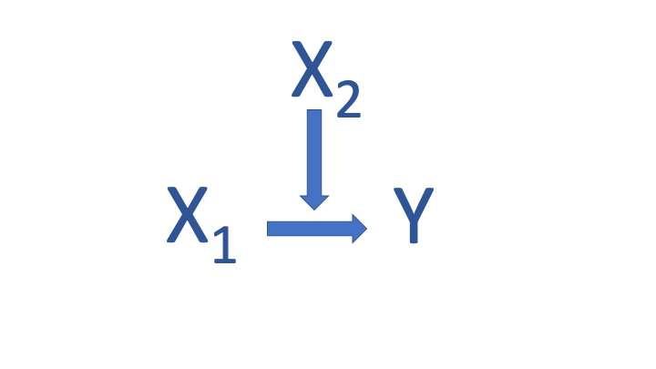

Learning Objectives
In this tutorial, you will learn how to estimate and interpret interactive, also called conditional, relationships using R. Specifically, we will cover:
- How to conduct multiple regression analysis involving conditional relationships in R.
- How to interpret results from multiple regression analysis with
interactions using the
plot_model()function in the sjPlot package to produce plots of predicted values.
Overview
Multiple regression allows us to estimate the effects of multiple independent variables on some interval-level outcome variable. This enables us to control for multiple correlated explanatory factors so that our estimates are unbiased and it enables us to avoid finding spurious relationships. It also permits the estimation of conditional or interactive relationships in which the effect of an explanatory variable depends on the values another variable takes (and vice versa). In this tutorial, we explain how to estimate and interpret interaction models involving two interval-level variables and those involving one interval and one categorical variable using R and we illustrate how to visualize their effects.
Conditional Relationships in Multiple Regression
If the effect of some variable depends on the level of another variable, the relationship is said to be conditional or interactive. Consider the image below. The effect of \(X_1\) on \(Y\) differs based on the value of \(X_2\). Put differently, the value of \(X_2\) determines the effect of \(X_1\) on the outcome, \(Y\).

If we estimate a regression that includes \(X_1\) and \(X_2\) (or just one of these variables), the results will not correct identify the effects of either variable on the outcome. We need to include \(X_1 \times X_2\) in the model as well.
We need to think carefully about our expectations for conditional relationships. When specifying a conditional relationship you should ask yourself these questions:
- Do you expect the conditional effect of
a variable to be negative or positive for all values of the conditioning
variable?
- Is the effect of \(X_1\) positive
or negative for all values of \(X_2\)?
- Is the effect of \(X_2\) positive or negative for all values of \(X_1\)?
- Is the effect of \(X_1\) positive
or negative for all values of \(X_2\)?
- For what values of the conditioning
variable do you expect its effect to be biggest and smallest?
- For what values of \(X_2\) is the effect of \(X_1\) strongest and weakest?
- When is the effect of \(X_1\) on \(X_2\) likely to be biggest and smallest?
It is important to remember conditional relationships are symmetric: if \(X_2\) conditions the effect of \(X_2\), then \(X_1\) must condition the effect of \(X_2\) on \(Y\). We must always consider our expectations for both variables in the interaction.
Interpretation of interactive effects depends on the level of measurement of \(X_1\) and \(X_2\). Below we illustrate how to estimate and interpret interactive relationships when \(X_1\) and \(X_2\) are both measured at the interval level and when one variable is interval and another categorical.
Interpretation of Effects
Consider the following regression where \(X_1\) and \(X_2\) are both measured at the interval level:
\[Y_i = \hat{\alpha} + \hat{\beta}_1 X_{1,i} + \hat{\beta}_2 X_{2,i} + \hat{\beta}_3 X_{1,i}X_{2,i} + ... + \hat{\epsilon}_i\]
How do we interpret the conditional effects of \(X_1\) and \(X_2\) in this model?
- \(\hat{\beta_1}\) is the effect of \(X_1\) on \(Y\) when \(X_2=0\).
- \(\hat{\beta_2}\) is the effect of \(X_2\) on \(Y\) when \(X_1=0\).
- \(\hat{\beta_3}\) is the additional effect of \(X_1 \times X_2\) on \(Y\) when neither are 0.
- \(\hat{\beta_1}X_1\) + \(\hat{\beta_3}X_1 \times X_2\) is the total effect of \(X_1\) when both \(X_1\) and \(X_2\) are not zero: \(\hat{\beta}_1 + \hat{\beta}_3X_2\).
- \(\hat{\beta_2}X_2\) + \(\hat{\beta_3}X_1 \times X_2\) is the total effect of \(X_2\) when both \(X_1\) and \(X_2\) are not zero: \(\hat{\beta}_2 + \hat{\beta}_3X_1\).
The effect of \(X_1\) on \(Y\) is affected by the value of \(X_2\); the effect of \(X_2\) on \(Y\) is affected by the value of \(X_1\).
Because the effects are conditional, the nature (and even the
direction or sign) of the effects are not necessarily the same for all
values of the constituent variable (the individual variables comprising
the interaction). Thus, analysts often present these effects by plotting
predicted values for different combinations of values of the variables.
Below we will consider a number of illustrative examples. We will (a)
state our expectations for the conditional relationship, (b) estimate
the conditional effects using the lm() function, and (c)
plot predicted values to aid in our interpretation using the
plot_model() function in the sjPlot package.
Example 1: The conditional effects of mortality risk and wage growth on vote for Hillary Clinton in US counties
We will use the data frame counties, which contains data on counties in the United States in 2016, to illustrate the estimation and interpretation of conditional relationships involving variables measured at the interval-level. Our goal is to estimate a model of the percent of the vote Hillary Clinton won in the 2016 presidential election (dem2p_percent). The explanatory variables in our model are mortality risk for adults age 25-45 (mortality_risk_25_45, measured as a percent), wage growth (wage_growth, measured as a percent), and the percent of a county’s residents who are white (white_percent), black (black_percent), hispanic (hispanic_percent), and who have a college degree (college_grad_percent).
A number of hypotheses are implicit in the selection of this set of variables, but we will focus our attention on the potentially conditional effects of mortality risk and wage growth. We begin by considering our expectations for the conditional effects:
- Do we expect conditional effects of
each variable to always be positive or negative?
- We expect the conditional effect of mortality risk to be negative for all values of wage growth because higher mortality risk is never a good thing.
- We expect the conditional effect of wage growth to be positive for all values of mortality risk because higher wage growth is always a positive thing.
- When are the conditional effects of
each variable expected to be weakest and strongest?
- We expect the conditional effect of mortality risk to be biggest (most negative) when wage growth is lowest because these counties are suffering in two distinct ways and to be smallest (less negative) in counties with higher wage growth.
- We expect the conditional effect of wage growth on the percent of the vote won by Hillary Clinton to be smaller in counties that experience higher mortality risk because they are less well off on the health dimension and higher in counties with lower mortality risk because they are better off both in terms of health and economic outcomes.
If these expectations are accurate, then the relationship of each variable with dem2p_percent is conditional and we need to include mortality_risk_25_45 * wage_growth in our regression.
Estimate the Regression
To estimate an interactive relationship, we include mortality_risk_25_45, wage_growth, and we include mortality_risk_25_45 * wage_growth as mortality_risk_25_45 * wage_growth in the model, along with our other independent variables as below. Examine and run the code.
countiesX <- lm(dem2p_percent ~ mortality_risk_25_45 + wage_growth + mortality_risk_25_45*wage_growth + college_grad_percent + hispanic_percent + white_percent + black_percent, data = counties)
summary(countiesX)Examine the output above carefully.
Interpreting the Coefficients
We can write out the regression equation as follows.
\[ \hat{\textbf{dem2p_percent}_i}= 71.0 -2.5\textbf{mortality_risk_25_45} +0.75\textbf{wage_growth} \\+0.64\textbf{college_grad_percent}_i+0.26\textbf{hispanic_percent}_i-0.56\textbf{white_percent}_i\\+0.14\textbf{black_percent}_i-0.14\textbf{mortality_risk_25_45*wage_growth}_i + \varepsilon_i\]
Our focus in this tutorial is on interpreting the effects of the variables involved in the interaction.
- \(-2.5\), the coefficient on \(\mathbf{mortality\_risk\_25\_45}\), is the effect of mortality risk on \(\mathbf{dem2p\_percent}\) when \(\mathbf{wage\_growth}=0\).
- 0.75, the coefficient on wage_growth, is the effect of wage growth when mortality_risk_25_45=0. (Note that mortality risk is never zero, there is always a positive chance of death.)
- \(- 0.14\) is the additional effect of mortality risk and wage growth on dem2p_percent when neither are zero.
- \(- 2.5\) * mortality_risk_25_45 - 0.14 * wage_growth * mortality_risk_25_45 is the total effect of mortality risk when both mortality_risk_25_45** and wage_growth are not zero.
- 0.75 * wage_growth - 0.14 * mortality_risk_25_45 * wage_growth is the total effect of wage growth when both mortality_risk_25_45 and wage_growth are not zero.
Example 2: The conditional effects of mortality risk and percent whites in a county on vote for Hillary Clinton
Next consider a different potential interaction effect in our model of Hillary Clinton’s vote share. Let’s estimate a model in which the effects of mortality risk and percent white residents in the county are allowed to be conditional.
- Do we expect the conditional effects of
each variable to always be positive or negative?
- We expect the conditional effect of mortality risk to be negative for all values of wage growth because higher mortality risk is never a good thing.
- We expect the conditional effect of the percent of white residents to be negative for all values of mortality risk because we expect whites to be less supportive of the Democratic candidate because the party divisions have historically been such that whites favor the Republican Party candidate.
- When are the conditional effects of
each variable expected to be weakest and strongest?
- We expect the conditional effect of mortality risk to be biggest
(most negative) when percent white is highest if counties with more
whites are more sensitive to mortality risk and to be less negative in
counties with fewer whites if whites are less sensitive.
- We expect the conditional effect of percent white on the percent of the vote won by Hillary Clinton to be greater in counties that experience higher mortality risk if mortality risk makes whites more anti-incumbent.
- We expect the conditional effect of mortality risk to be biggest
(most negative) when percent white is highest if counties with more
whites are more sensitive to mortality risk and to be less negative in
counties with fewer whites if whites are less sensitive.
If these expectations are accurate, then the relationship of each variable with dem2p_percent is conditional and we need to include mortality_risk_25_45 times white_percent in our regression.
Complete the code below to estimate the following model. Present the
results using the summary() function.
\[ \hat{\textbf{dem2p_percent}_i}= \hat{\alpha} +\hat{\beta_1}\textbf{mortality_risk_25_45}+ \hat{\beta_2}\textbf{wage_growth} \\+\hat{\beta_3}\textbf{college_grad_percent}_i+\hat{\beta_4}\textbf{hispanic_percent}_i-\hat{\beta_5}\textbf{white_percent}_i+\\ \hat{\beta_6}\textbf{black_percent}_i+\hat{\beta_7}\textbf{mortality_risk_25_45*white_percent}_i + \varepsilon_i\]
countiesX2 <- Look at the regression model above for clues.
Make sure you use * for the interaction and not X to multiply.countiesX2 <- lm(dem2p_percent ~ mortality_risk_25_45 + wage_growth +mortality_risk_25_45*white_percent + college_grad_percent + hispanic_percent + black_percent, data = counties)
summary(countiesX2)Look carefully at the output above and answer the following questions.
Visualizing Conditional Relationships Involving Interval-Level Variables
It is difficult to grasp the effect of interactions based only on the coefficient estimates. Plotting predicted values from the model helps us to understand conditional relationships.
We will use the plot_model() function in the sjPlot package to illustrate the
relationship.
Plotting the conditional effect of wage growth
Let’s begin by plotting the effect of mortality risk conditional on
wage growth as estimated in our first model, countiesX.
To do so, first load the sjPlot
package with the library() function. The first argument in
the plot_model() function is the name of the model fit
object, countiesX. We must then provide the
type argument. We set it to "pred" to produce
predicted values. To present predicted values for the conditional
relationship, we supply the terms argument. List both
variables that are involved in the interaction, in quotes, separated by
commas, and inside the c() function. The first argument
listed is the variable whose effects we want to plot, the second is the
conditioning variable.
The remaining arguments are not required but make the plot more
informative. Here I’ve specified the title argument for the
main plot title; the axis.title argument, which allows us
to provide labels for the x-axis (the first given) and the y-axis (the
second given); and the legend.title, which corresponds to
the second variable in the terms argument.
library(sjPlot)
plot_model(countiesX,
type = "pred",
terms = c("wage_growth", "mortality_risk_25_45"),
title = "Predicted Effect of Wage Growth by Mortality Risk",
axis.title = c("Wage Growth", "Predicted Vote for Hillary Clinton (%)"),
legend.title = "Mortality Risk")The plot_model() function places the first
term on the x-axis. Three values are selected for the
second term(here mortality_risk_25_45),
corresponding to the mean (3.08) in blue and one standard deviation
above (4) and below (2.17) the mean, in green and red, respectively.
Predicted values are presented on the y-axis for all values of
wage_growth. All other interval level variables are
held at their mean when generating the predictions. (If there were
nominal variables, they would be held at their base level.)
The shaded areas in the plot present confidence intervals around the predictions. Where these overlap, there is no discernible difference in the predicted values. Thus, we can see that the effect of wage growth on the predicted vote for Hillary Clinton is not significantly different for the three values of mortality risk plotted here for wage growth between about -15 and -35. The effect of mortality differs significantly, however, as wage growth increases in a county.
Look carefully at the plot. We can see that as wages go up, vote for Hillary Clinton increases regardless of the value of mortality risk. But the effect of each one percentage point increases in wages is bigger when mortality risk is low (because the red line is steeper). This is consistent with our expectations.
What is the predicted percentage of the vote for Hillary Clinton when wages are flat (for wage_growth equal to zero) when the mortality rate is at its means value? To answer this question, imagine a horizontal line from the blue line when the x-axis value is zero to the y-axis. This is the predicted value, about 32 percent.
Plotting the conditional effect of mortality risk
What can we say about the effect of mortality risk? To plot the
effect of mortality_risk_25_45, we create another plot,
identical to the last but flipping the order of the terms
and correcting the labels. Replace the XXX in the code and generate the
plot.
plot_model(countiesX,
type = "pred",
XXX = XXX,
title = XXX,
axis.title = XXX,
legend.title = XXX)Specify the terms argument as c("mortality_risk_25_45", "wage_growth").
Change the title to say predicted effect of mortality risk by
wage growth.
Specify the axis.title argument as "Mortality Risk", "Predicted Vote for Hillary Clinton (%)"
making sure to enclose them inside the c() function and
separate with commas.
Change the legend.title to "Wage Growth"plot_model(countiesX,
type = "pred",
terms = c("mortality_risk_25_45", "wage_growth"),
title = "Predicted Effect of Mortality Risk by Wage Growth",
axis.title = c("Mortality Risk", "Predicted Vote for Hillary Clinton (%)"),
legend.title = "Wage Growth")Practice
Let’s practice producing predicted value plots for conditional relationships by plotting the effect of mortality_risk_25-45 conditional on white_percent from countiesX2, the second model object we fit above.
Replace the XXX in the code and produce the plot. Notice that I’ve
added [50, 86, 100] after white_percent in
the code below. We can pick the values of the second variable for which
we wish to generate the plot. I’ve selected 50 and 100 as interesting
values and 86 is the mean. You can pick whatever you want, however, for
your own work (or use the function default).
plot_model(XXX, XXX = XXX,
XXX = "mortality_risk_25_45", "white_percent[50, 86, 100]",
title = "Predicted Effect of Mortality Risk by Majority White",
axis.title = c("XXX", "Predicted Vote for Hillary Clinton (%)"),
legend.title = "XXX")Replace the first XXX with the name of the model fit object.
Replace the second XXX with type argument and specify "pred"
for the next XXX.
The final XXX should be replaced with the name of the second
term.plot_model(countiesX2,
type = "pred",
terms = c("mortality_risk_25_45", "white_percent[50, 86, 100]"),
title = "Predicted Effect of Mortality Risk by Percent White",
axis.title = c("Mortality Risk", "Predicted Vote for Hillary Clinton (%)"),
legend.title = "Percent White")Write code to produce a plot illustrating the effect of the percent white conditioned on the value of mortality risk in a county and run the code. Use values of mortality_risk_25_45 of 1 (low risk), 3 (approximately mean risk), and 5 (high risk) to generate the plot. For titles for your plot use “Predicted Effect of Percent White by Mortality Risk,” “Percent White,” and “Mortality Risk.”
1. Call plot_model and specify in order the model fit object,
the term argument, the title, axis.title, and legend. title
arguments.
2. Specify type="pred".3. Specify terms by listing white_percent first, a comma,
and mortality_risk_25_45[1,3,5] each in quotes inside c().
4. Specify the axis.title by listing "Percent White"
followed by a comma and "Predicted Vote for Hillary Clinton (%)",
listing these inside the c() function.
5. Specify the legend.title as "Mortality Risk".plot_model(countiesX2,
type = "pred",
terms = c("white_percent", "mortality_risk_25_45[1,3,5]"),
title = "Predicted Effect of Percent White by Mortality Risk",
axis.title = c("Percent White", "Predicted Vote for Hillary Clinton (%)"),
legend.title = "Mortality Risk")Your plot should show that the effect of percent white is always negative (all slopes are negative) and is biggest (the slope is steepest) for counties with the highest mortality risk when all other variables are held at their mean value. There is support for the expectation that higher mortality risk makes predominantly white counties more anti-incumbent than other counties.
Interactions Involving One Categorical and One Interval Variable
Little changes when our interactions involve in interval and categorical variable. Consider the following regression where \(X_1\) is a binary categorical variable and \(X_2\) is an interval-level variable:
\[Y_i = \hat{\alpha} + \hat{\beta}_1 X_{1,i} + \hat{\beta}_2 X_{2,i} + \hat{\beta}_3 X_{1,i}X_{2,i} + ... + \hat{\epsilon}_i.\]
- \(\hat{\alpha}\) tells us the expected value of \(Y\) when all the explanatory variables, including the interaction term, are zero. Thus it gives us the effect of being in the baseline category when \(X_2\) and all other variables have a value of zero.
- \(\hat{\beta_1}\) is the difference in the expected value of \(Y\) between cases in the baseline and the included category when \(X_2\)=0.
- \(\hat{\alpha} + \hat{\beta_1}\) is the expected value of \(Y\) for the included category when \(X_2\) (and all other explanatory variables are zero).
- \(\hat{\beta_2}\) is the effect of \(X_2\) on \(Y\) when \(X_1=0\), i.e., when the case is in the baseline category.
- \(\hat{\beta_3}\) is the additional effect of \(X_2\) on \(Y\) when neither are 0. Thus it is the additional effect of \(X_2\) for the included category. The difference in the expected value of \(Y\) between the two categories widens or shrinks as the value of the interval-level variable increases.
Example 1: The conditional effects of political rights and trade openness on environmental performance
To illustrate interpretation of interaction terms involving a categorical and interval variable we will use the Quality of Government data set, qog, which has data from countries around the world. We will investigate the effects of trade openness (ipi_tradeopen, measured on a scale from 1-10, where 10 is most open), citizen political rights (rights, coded as 0 if a country’s citizens have few political rights and 1 if they have many), and economic freedoms (hf_efiscore, measured on a scale from 0 to 100 where 100 is more freedoms) on a country’s overall environmental health (epi_epi, measured on a scale from 0 to 100 where 100 is better performance).
Let’s assume we suspect that the effect of trade openness depends on the existence or lack thereof of political rights and that the effect of political rights depends on trade openness. Let’s see what we find.
Estimate the regression
Estimate the appropriate model. Save the result to
model1 and use the summary() function to
examine your results.
1. Use the lm() function, specifying epi_epi as the dependent variable.
2. Type a tilde and then list rights inside the factor function plus
ipi_tradeopen + factor(rights)*ipi_tradeopen + hg_efiscore
3. Be sure to include the data argument, setting it equal to qog
4. Examine your results with summary(model1)model1 <- lm(epi_epi ~ factor(rights) + ipi_tradeopen + factor(rights)*ipi_tradeopen + hf_efiscore, data = qog)
summary(model1)Let’s interpret the effects of the variables involved in the interaction.
- -7.399, the intercept tells us the expected value of the environmental protection index when a country’s citizens have few political rights (rights=0) and there is no trade openness (ipi_tradeopen=0) and there are no economic freedoms (hf_efiscore=0).
- 29.226, the coefficient on rights, is the difference in the expected value of the environmental protection index for country’s that do not and do have lots of political rights when trade openness, ipi_tradeopen, = 0. So countries with lots of political rights have a score on the environmental protection index that is about 29 points higher. 3.-7.3999 + 29.226 = 21.8261 is the expected value of the environmental performance index for for countries with many political rights when a country scores zero on the trade openness index (and all other explanatory variables are zero).
- 4.750, the coefficient on ipi_tradeopen, is the effect of each unit increase on the trade openness scale when a country has few political rights (rights=0). For these country’s trade openness increases their environmental protection index score.
- -4.629, the coefficient on the interaction term, is the difference in the effect of each unit increase on the trade openness scale when a country has many political rights (rights=1) compared to few. Thus, the effect of trade openness drops 4.629 when a country’s citizens have many political rights. In fact, it nearly cancels out the main effect of 4.750.
Plot the conditional effects of political rights
Let’s plot the conditional effects of political rights for different values of trade openness. Replace the XXX and run the code.
plot_model(model1,
type = "pred",
terms = c(XXX, XXX),
title = "Predicted Effect of Rights by Trade Openness",
XXX = c("Political Rights", "Predicted Environmental Performance Index"),
XXX = "Trade as Percent of GDP")Make sure to list the variable you want on the x-axis first in the terms argument.
(It should be rights.)
Did you specify axis.title and legend.title?plot_model(model1,
type = "pred",
terms = c("rights", "ipi_tradeopen"),
title = "Predicted Effect of Rights by Trade Openness",
axis.title = c("Political Rights", "Predicted Environmental Performance Index"),
legend.title = "Trade as Percent of GDP") What does this plot tell us? Several things! The effect of political rights depends on trade openness only for those countries that have few political rights (rights=0). For levels of trade openness one standard deviation below the mean, we expect a relatively low score on the environmental performance index while for countries at the mean we expect a higher score and for those countries with trade openness one standard deviation above the mean, we expect an even higher score on the EPI index. These effects are statistically different from one another because the confidence intervals do not overlap. But the effect of having lots of political freedoms does not change based on a country’s trade openness.
Now plot the conditional effects of trade openness by replacing the XXX in the code below. Use “Trade as Share of GDP” and “Political Rights” for the omitted titles. Be sure to put them in the right place.
plot_model(model1,
type = XXX,
terms = c(XXX, XXX),
title = "Predicted Effect of Trade by Rights",
axis.title = c(XXX, "Predicted Environmental Protection Index"),
legend.title = XXX)Did you set type to "pred"?
The terms argumbent should list ipi_tradeopen first, followed by rights,
both inside quotation marks
The axis.title should specify "Trade as Share of GDP" and the legend.title
"Political Rights"plot_model(model1,
type = "pred",
terms = c("ipi_tradeopen", "rights"),
title = "Predicted Effect of Trade by Rights",
axis.title = c("Trade as Share of GDP", "Predicted Environmental Protection Index"),
legend.title = "Political Rights")Example 2: The conditional effects of a high GDP and democracy on confidence in institutions
For our second example illustrating interpretation of interaction terms involving a categorical and interval variable we will use data from countries around the world in the data frame world. We will investigate the interactive effects of democracy (polity, measured on a scale from -10 to +10, where 10 is most democratic) and high versus low GDP (hi_gdp, coded as “Low GDP” and “High GDP”), on citizens confidence in the institutions of government (confidence, a scale from 0 to 100 where 100 is most confident).
Estimate the regression
Estimate the appropriate model. Save the result to
model2 and use the summary() function to
examine your results.
1. Use the lm() function, specifying confidence as the dependent variable.
2. Type a tilde and then list hi_gdp inside the factor function plus
polity + factor(hi_gdp)*polity
3. Be sure to include the data argument, setting it equal to world
4. Examine your results with summary(model2)model2<-lm(confidence ~ factor(hi_gdp) + polity + factor(hi_gdp) * polity, data = world)
summary(model2)Plot the conditional effect of a high versus low GPP
It is easier to understand the effect of interactions by plotting. Replace the XXX in the code below to generate the predicted effect of a high versus a low GDP conditioned on a countries Polity score. Notice that I’ve omitted the x-axis title as the labels provide all the necessary information to interpret the plot.
1. We use the plot_model function.
2. The type of plot we want is predicted values so set type to "pred".
3. Next we specify the terms argument, listing the variable we wish to plot on the
x-axis first, here "hi_gdp", and the conditioning variable second, here "polity."XXX(model2,
type = XXX,
XXX = c(XXX, XXX),
title = "Predicted Effect of High GDP by Democracy Score",
axis.title = c("", "Predicted Confidence"),
legend.title = "Polity Democracy Score")plot_model(model2,
type = "pred",
terms = c("hi_gdp", "polity"),
title = "Predicted Effect of GDP by Democracy Score",
axis.title = c("", "Predicted Confidence"),
legend.title = "Polity Democracy Score")Recall that the plot_model() function selects vaues of
the Polity Democracy Score one standard deviation below the mean, the
mean, and one standard deviation above the mean.
Now, see if you can create the plot for the effects of democracy score on confidence, conditional on having a high versus low GDP. Give your plot the title “Predicted Effect of GDP by Democracy Score” and label the legend title “GDP”, the x-axis title “Polity Democracy Score”, and the y-axis title “Predicted Confidence”.
1. Begin with the plot_model function and list model2 as the first argument.
2. Specify the type argument as "pred" to tell the function to plot predicted values.
3. Specify the terms argument to tell the function what effects you want to plot.
4. List the x-axis variable first. This is the variable whose effects you want to plot.
In this example, we want to plot the effects of democracy score, "polity".
5. Then list the conditioning variable, here "hi_GDP".6. Add the title argument. Make sure to set it equal to the title in the instructions.
7. Add the axis.title argument. Remember the titles must be placed in quotes inside the c function.
Be sure to list the x-axis title first and the y-axis title second.
8. Specify the legend.title argument to name the legend "GDP"plot_model(model2,
type = "pred",
terms = c("polity", "hi_gdp"),
title = "Predicted Effect of GDP by Democracy Score",
axis.title = c("Polity Democracy Score", "Predicted Confidence"),
legend.title = "GDP")The Takeaways
Multiple regression analysis is a straightforward extension of simple regression analysis that allows us to control for competing explanations for some interval-level outcome and to estimate conditional or interactive relationships. A conditional or interactive relationship implies that the effect of each variable depends on the values taken by another. Including conditional relationships in the model requires us to include each individual explanatory variable and in addition to include a term multiplying the two variables in the interaction.
It is important to think carefully about our expectations for conditional relationships, asking:
- Do you expect the conditional effect of a variable to be negative or positive for all values of the conditioning variable? Put differently, is the effect of \(X_1\) positive or negative for all values of \(X_2\)? What about the effect of \(X_2\)? We must always consider our expectations for both variables in the interaction.
- For what values of the conditioning variable do you expect its effect to be biggest and smallest? For what values of \(X_2\) is the effect of \(X_1\) strongest and weakest? When is the effect of \(X_1\) on \(X_2\) likely to be biggest and smallest?
We may not have clear expectations for both variables and/or for either one of these questions. That’s okay!
Interpreting the effects of interactions is often most easily
accomplished by using predicted values. The plot_model()
function in the sjPlot package. The
function will calculate the predicted values of the outcome variable (by
setting the type argument to “pred”) as a function of one variable (the
first in the terms argument) conditional on the second variable (the
second in the terms argument) in the interaction.
Remember: Predictions are calculating after setting
the values of all other variables at their mean values if interval (or
ordinal treated as interval) and at their base value if they are
categorical (nominal or ordinal). Ninety-five percent confidence
intervals are included around the predictions, allowing you to see when
predictions are significantly different from each other.
The results from these plots can be used to assess theoretical
expectations about the nature of the conditional relationship. There are
additional arguments that can be passed to the plot_model()
function to generate predictions holding other variables are specific
values. We’ll cover these arguments in the context of logistic
regression models.
If your research question requires you to estimate conditional
relationships you should check out http://www.strengejacke.de/sjPlot/articles/plot_interactions.html
for additional examples and options for plotting predicted values with
plot_model().